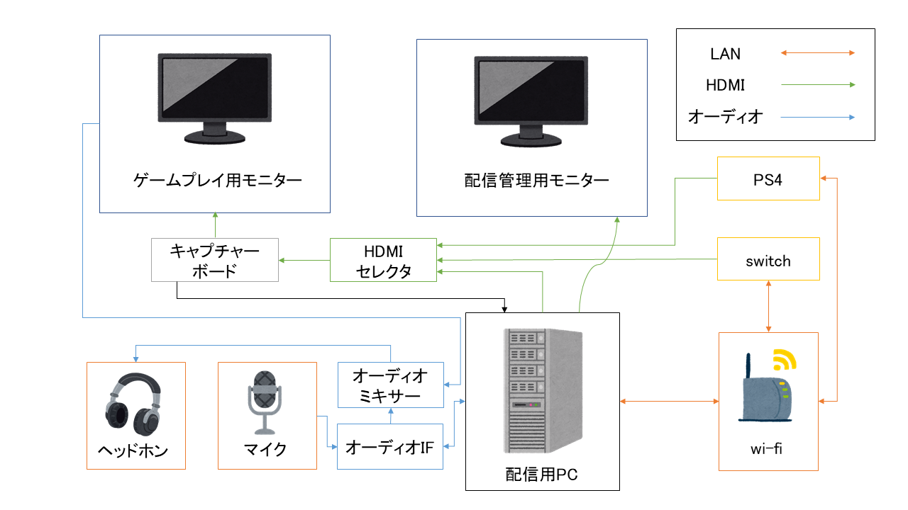

111111111111のうぇぶぺーじ
ゲーム配信を始めよう！！！
昨日は111111111111さん(僕)のポリモーフィズムでif-elseをダラダラ書くのをやめよう in Perlでした．
みなさんはゲーム配信していますか？一部の方は知っているかもしれませんが，私は別名義でゲーム配信をしています．
というわけで今日はゲーム配信を始めるにあたって必要な機材などについてhtml直書きのページで紹介したいと思います．
この記事での目標
ゲーム配信を始めるにはそれはもう「やりたい！」って思ったらその日に始めていいもです，というかゲーム配信をしてください．
実際にPS4にはボタン一つでゲーム配信を始める機能が備わっているので，PS4を持っているなら今からでも始められます．
しかし，PS4のゲーム配信機能は細かい設定ができなかったりして色々と不便です．たとえば「配信前の待機画面」や「一時中断画面」などに別の画面への切り替えができなかったり，マイクのシステム側でのボリューム調整やミュートができなかったりと，とにかくできないことが多くてちょっと本格的にやってみたいなと思ったときに物足りなく感じてしまします．
そこで今回この記事では
- ゲーム配信を始めたいけど何を準備すればいいのかわからない！
- どの機材があればいいのかわかんない！
- PS4だけじゃなくswitchのゲームも配信したい！
これらにあてはまる人を対象として
- 一人でゲーム配信をするための配信環境準備
- コラボ実況配信などのdiscordでのチャット音声を入れながらする配信の環境準備
をしていきたいと思います．
また，今回はPS4やswitchやXBOXなどのCS機を用いたプレイの配信を想定しています．
まずは完成系を見てみよう
上記の目標を達成するための配信環境の完成系を見てみましょう．このようになります．

配線がごちゃごちゃしててちょっと大変そうに見えますが，実際は電源ケーブルなどもあってもっと大変です．
では実際に必要な機材について紹介していきます．
必要なもの(機材編)
配信用PC
「ゲーム配信するのにおすすめのPCはありますか？」という質問はググれば無限に出てきます．これこそ究極の禅問答かもしれません．
今回はフルHDでの配信(1920×1080画質)，60fpsでの配信を想定します．パソコンについての基本的な知識は今回は割愛しますが，必要なスペックに関してできるだけ細かく説明したいと思います．
まず前提として，あくまでも個人的な意見ですが，そこまでハイスペックでなくてもフルHD配信 60fpsは可能です．後述のキャプチャーボードの仕様にも左右されますが，ミドルレベルのゲーミングPCでも十分に対応できると思います．あ，でもノートPCはやめましょう．タワー型のにしてください．
パソコンの性能は基本的に
の性能の掛け合せで決まります．掛け合わせなので一概にCPUが良ければ良いというわけでもなく，またCPUが足りなくてもRAMやGPUを足せばよかったり，これらの合計から性能が十分か不十分か判断するのはとても困難です．なのでこれから紹介するものはあくまでも最低限これというものを紹介します．
CPU
intel製のであれば，i5シリーズなら第八世代(i5-8○○○のもの)以降のもの，i7シリーズなら第五世代(i7-5○○○)以降のものが良いでしょう．数値としてはPassMarkのベンチマークにおいて，スコアが10000を越えるCPUなら何の問題もなく使えると思います．BTOで購入する場合や中古を購入する場合のであれば性能について気をつける必要がありますが，各PCメーカーが出しているここ数年のモデルであれば基本的に問題ないです．
AMD製のものについては僕はあまり詳しくないので割愛しますが，PassMarkのスコアを参照すれば大丈夫です．
RAM
16GB以上のものを選べば良いです．それ以上はオーバースペックになります．逆に8GBではCPUやGPUによって足りない可能性があります．
GPU
よほど高性能なCPUでなければ必要です．CPUの性能によって必要な性能が変化するけれども，最低でもGTX 1080ti以上の物は必要になります．
基本的にはCPUの性能に予算を当てるのが良いです．その上でGPUの性能を考えましょう．
その他
キャプチャーボードの入力としてUSB3.0のポートが必要になります．中古で揃える場合は気をつけましょう．
GPUを高性能の物に自力で替える場合は電源が足りるかどうかを気をつけましょう．
モニター
PCゲー用の機材を揃えるのであれば，リフレッシュレートが240hzあるのを揃えたりしますが，CS機でプレイするものを配信する場合はリフレッシュレートが60hz前後のものでも問題ありません．また，ゲームプレイ用のモニターはサウンドモジュールがあるものが良いですが，無くてもキャプチャーボード経由で音を拾うことができるので問題ありません．もちろん，フルHD配信をするのであれば解像度が(1920*1080)でないといけません．
キャプチャーボード
ゲームプレイをPC出力するための機械です．HDMIで入力されたものをUSBでPCに出力します．
ソフトウェアエンコードとかハードウェアエンコードとかありますが，ゲームプレイ用のモニターを用意するのでどちらでも問題ありません．しかし，ソフトウェアエンコードの場合は処理の負荷が配信用PCにかかるため，PCの性能に自身がなければハードウェアエンコードのものにしましょう．
もちろん，USBでPCへの出力ができるタイプの物でなければいけません．有名な製品としてはIO-DATAのGV-USB3/HDやGV-US2C/HD，AverMediaのLive Gamer ProtableシリーズやLive Gamer EXTREMEシリーズのものを使えば問題ありません．amazonなどで見かける安いようなキャプチャーボードを買ってはいけません．
HDMIセレクタ
PS4やswitchの配信をする場合，配信ごとにHDMIケーブルを挿し抜きするのが大変なのでHDMIセレクタを使います．どのメーカーのものを使っても問題ありませんが，3口以上のものを買えばPS4やswitchだけでなく，配信していない時にゲーム用モニターをPCのディスプレイとして使うことができます．
wifiルーター
ルーターあれこれというよりもネットワークの速度が重要です．とはいっても，youtube liveにてフルHD配信を行う場合の推奨速度は5Mbpsなのでぶっちゃけそれほど重要ではありません．しかし，バトロワゲーや格ゲーなどの配信をする際には速度が重要になります．もちろんですが，有線でやりましょう．
オーディオIF
最悪無くても問題ないけれども，あった方が良いです．僕はオーディオ機器には詳しくはないのですが，1万円もあれば十分なものが揃えられると思います．
オーディオミキサー
コラボ配信などをする際，通話とゲーム音を一つのヘッドホンに出力させるために必要です．最悪無くてもできますが，その時はイヤホンの上にヘッドホンをするはめになります．嫌ですね．behringerやYAMAHAなどが出している，3チャンネル以上に対応したものであれば大丈夫です．私はBehringerのxenyx502を使っています．
マイク
コンデンサーマイクでも何でも良いです，ミニプラグに出力するようなものは配信PCに直接挿して，それ以外のものはオーディオIFに出力させましょう．
ヘッドホン
オーディオIFから出力するため，標準プラグに対応している物を選びましょう．ゲーミング系統のものでなくても，audio-technicaなどから出ている5000円前後のものでも問題ありません．
機材としては以上になります！これに加えてキーボードやマウスやゲームソフトも買わないといけません．
気づきましたか？そうです！！！
ゲーム実況を始めるのはめちゃくちゃ金がかかります
オーディオIFやオーディオミキサーやHDMIセレクタなどは無くてもどうにかなったりしますが，それでも金がかかります．
それでもゲーム配信は楽しいのです
必要なもの(ソフト編)
youtubeアカウント
数クリックするだけでできます．youtubeでなくてもtwichやニコ生などそれぞれのアカウントが必要になります．
配信ソフト
OBSやStreamlabsOBSなどがあります．好きなものを選べば良いですが，OBSに比べてStreamlabsOBSの方が画質や音質の設定を細かく調整できます．ニコ生をする時はN Airというニコニコ生放送公式の配信ソフトがあるためそちらを使いましょう．
機材に比べて，PC上で準備するものは少なくて済みます．やったね．
その他
海外のストリーマーのようにカメラで自分の姿を出したい場合は別途カメラが必要になります(僕はそんなことしていないのでやり方はわかりません)
また，Vtuberみたいにlive2Dや3DCGモデルを動かしたい場合はその分PCの性能が必要になる上，モーションキャプチャーなども必要になります．これらのやり方も僕は存じえないので各自ググりましょう
いかがでしたか
もう一度言いますが，ゲーム配信の機材を一から揃えるには結構金がかかります．とはいえ，各機材はそこまでハイエンドである必要はなく，最低限のものさえ揃えば気軽に始められるので，一つの趣味としては比較的に予算は低めだと思います．
みんなもゲーム配信者になろう！！！！
この記事は Tokyo City University Advent Calender 2020の記事でした．
明日はうめさんの『年末ドラマスペシャル アドカレチキンレース』？です．
TOPへ戻る